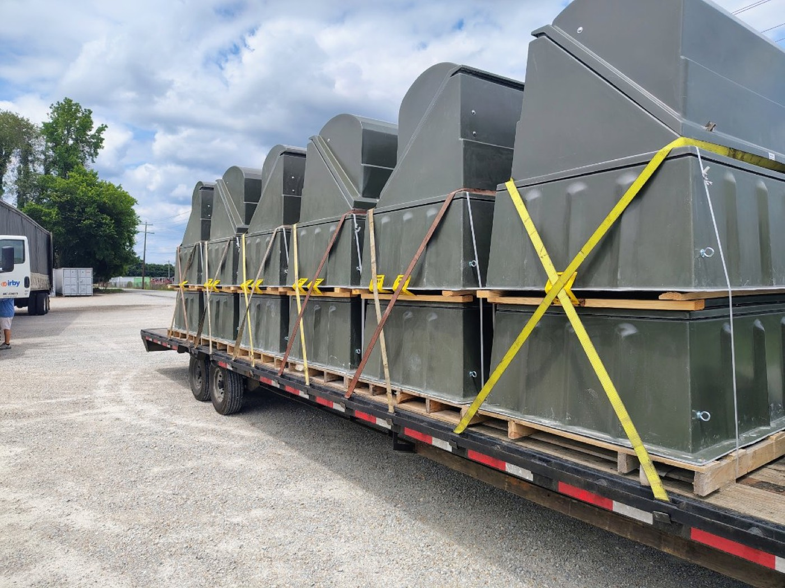

Step deck, drop deck, single drop — one trailer, three names, zero difference in the equipment. The main deck sits around 3'6" off the ground instead of a flatbed's ~5', which leaves close to 10' of legal cargo height under the 13'6" ceiling instead of roughly 8'6". Taller than that, or heavy equipment that has to drive on from the front, and you are into double-drop/RGN territory.
Short answer: yes. A step deck and a drop deck are the same trailer. So is a "single drop." Different regions, different carriers, different load boards — same piece of steel. If you booked a step deck and the driver shows up with what your dock foreman calls a drop deck, nobody made a mistake. The industry just never agreed on one name.
One trailer, three names
The trailer has two deck levels: a short upper deck that rides over the tractor's fifth wheel, then a step down to a long main deck that runs to the rear axles. That single drop is where every name comes from. "Step deck" describes the step. "Drop deck" describes the drop. "Single drop" distinguishes it from a double drop, which has a second step — more on that below. Spec sheets, rate confirmations, and dispatch boards use all three interchangeably, and there is no difference in the equipment, the securement, or what it can legally carry. Anyone telling you a step deck hauls something a drop deck can't is selling confusion.
How it differs from a flatbed
The number that matters is deck height. A standard flatbed deck sits around 5 feet — roughly 60 inches — off the ground. Under the ~13'6" legal height ceiling, that leaves you about 8'6" of cargo before you need permits. A step deck's main deck drops to around 3'6" (about 42"), so the same ceiling leaves close to 10 feet of legal cargo height. That extra foot and a half of freight is the entire reason the trailer exists.
Everything else is familiar flatbed territory: open deck, loading from the sides or above with a forklift or crane, chains and straps to the rub rail, tarps if the freight can't take weather. The rest of the legal envelope doesn't move either — 8'6" wide, 80,000 lbs gross vehicle weight, trailers up to roughly 53' long. The drop only buys you height. If your problem is width or weight, a step deck doesn't solve it.

Typical step deck numbers
- Overall length: 48' and 53' are the standard builds.
- Upper deck: roughly 10–11' long, sitting at flatbed height over the kingpin.
- Main deck: roughly 37–43' long at about 3'6" deck height.
- Deck width: 8'6" — same as the legal width limit, so anything wider is oversize no matter what trailer it rides on.
- Legal cargo height: close to 10' on the main deck before you're into permit territory.
Freight that belongs on a step deck
The step deck's lane is anything too tall for a flatbed but under about 10 feet:
- Air handling units, rooftop HVAC packages, and industrial fans
- CNC machines, machining centers, and press equipment in the 9–10' range
- Generators, compressors, and skidded electrical enclosures
- Forklifts, scissor lifts, and skid steers — many step decks carry ramps or load levelers for drive-on loading of lighter equipment
- Tanks, hoppers, and fabricated structures that stand tall on a short footprint
If your machine measures 9'2" on the crane hook, a flatbed puts you at over 14' of travel height and into permit paperwork, escort math, and route surveys. The same machine on a step deck rolls legal. That's the whole decision, most days.
When a step deck isn't enough
Two things push you past a single drop. First, height: cargo much over 10' tall needs a lower floor. A double drop adds a second step into a well between the axles, with the deck riding roughly 18–24" off the ground. An RGN (removable gooseneck) is a double drop whose neck detaches, so tracked and wheeled machines can climb on from the front under their own power. Second, drive-on loading of genuinely heavy iron: ramps on a step deck handle a skid steer fine, but an excavator or dozer wants the detachable neck and the low well. We break that decision down in RGN vs Lowboy Trailers, and the full three-way comparison lives in Flatbed vs Step Deck vs RGN.
One more tradeoff worth knowing: the well on a double drop shortens usable deck length and complicates forklift loading from the side. If the freight is under 10' tall, the step deck is almost always the simpler, easier-to-cover choice.
Bottom line
- Step deck = drop deck = single drop. Same trailer. Any difference you've heard is terminology, not equipment.
- The drop buys legal height: close to 10' of cargo on the main deck vs roughly 8'6" on a flatbed, under the same 13'6" ceiling.
- Standard builds run 48' and 53', with a ~42" main deck and 8'6" of width.
- Width and weight limits don't change — 8'6" wide and 80,000 lbs gross apply either way.
- Over ~10' tall, or heavy equipment that drives on from the front: double drop or RGN, not a step deck.
Not sure which deck your load clears on? Send us the dimensions — length, width, height, weight — and the dispatch desk will match the freight to the trailer and coordinate the haul end to end. Start with our Heavy Haul Transport page or get a quote.